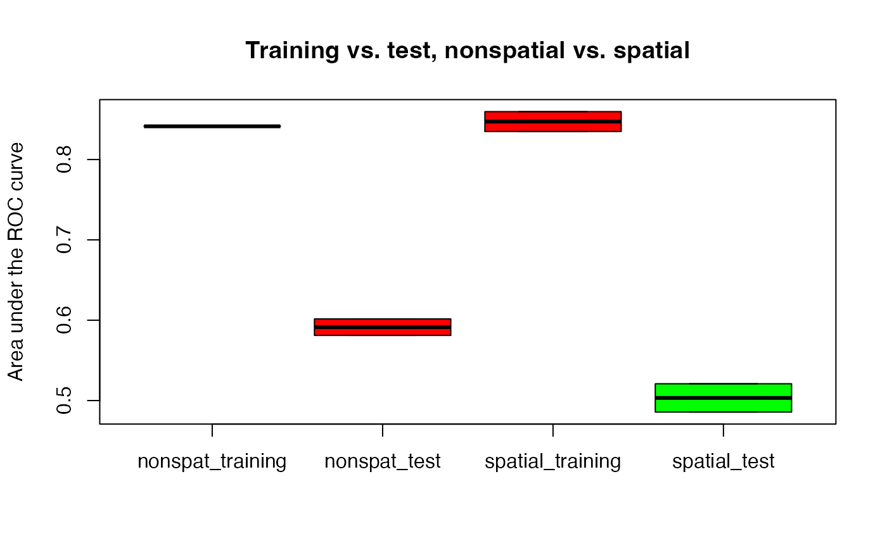

R/sperrorest.R
sperrorest.Rdsperrorest is a flexible interface for multiple types of parallelized spatial and non-spatial cross-validation and bootstrap error estimation and parallelized permutation-based assessment of spatial variable importance.
sperrorest( formula, data, coords = c("x", "y"), model_fun, model_args = list(), pred_fun = NULL, pred_args = list(), smp_fun = partition_cv, smp_args = list(), train_fun = NULL, train_param = NULL, test_fun = NULL, test_param = NULL, err_fun = err_default, imp_variables = NULL, imp_permutations = 1000, imp_sample_from = c("test", "train", "all"), importance = !is.null(imp_variables), distance = FALSE, do_gc = 1, progress = "all", benchmark = FALSE, mode_rep = c("future", "sequential", "loop"), mode_fold = c("sequential", "future", "loop"), verbose = 0 )
| formula | A formula specifying the variables used by the |
|---|---|
| data | a |
| coords | vector of length 2 defining the variables in |
| model_fun | Function that fits a predictive model, such as |
| model_args | Arguments to be passed to |
| pred_fun | Prediction function for a fitted model object created by
|
| pred_args | (optional) Arguments to |
| smp_fun | A function for sampling training and test sets from |
| smp_args | (optional) Arguments to be passed to |
| train_fun | (optional) A function for resampling or subsampling the training sample in order to achieve, e.g., uniform sample sizes on all training sets, or maintaining a certain ratio of positives and negatives in training sets. E.g. resample_uniform or resample_strat_uniform. |
| train_param | (optional) Arguments to be passed to |
| test_fun | (optional) Like |
| test_param | (optional) Arguments to be passed to |
| err_fun | A function that calculates selected error measures from the
known responses in |
| imp_variables | (optional; used if |
| imp_permutations | (optional; used if |
| imp_sample_from | (default: |
| importance | logical (default: |
| distance | logical (default: |
| do_gc | numeric (default: 1): defines frequency of memory garbage
collection by calling gc; if |
| progress | character (default: |
| benchmark | (optional) logical (default: |
| mode_rep, mode_fold | character (default: |
| verbose | Controls the amount of information printed while processing. Defaults to 0 (no output). |
A list (object of class sperrorest) with (up to) six components:
error_rep: sperrorestreperror containing
predictive performances at the repetition level
error_fold: sperroresterror object containing predictive
performances at the fold level
represampling: represampling object
importance: sperrorestimportance object containing
permutation-based variable importances at the fold level
benchmark: sperrorestbenchmark object containing
information on the system the code is running on, starting and
finishing times, number of available CPU cores and runtime performance
package_version: sperrorestpackageversion object containing
information about the sperrorest package version
Custom predict functions passed to pred_fun, which consist of
multiple child functions, must be defined in one function.
Running in parallel is supported via package future.
Have a look at vignette("future-1-overview", package = "future").
In short: Choose a backend and specify the number of workers, then call
sperrorest() as usual. Example:
future::plan(future.callr::callr, workers = 2) sperrorest()
Parallelization at the repetition is recommended when using repeated cross-validation. If the 'granularity' of parallelized function calls is too fine, the overall runtime will be very poor since the overhead for passing arguments and handling environments becomes too large. Use fold-level parallelization only when the processing time of individual folds is very large and the number of repetitions is small or equals 1.
Note that nested calls to future are not possible.
Therefore a sequential sperrorest call should be used for
hyperparameter tuning in a nested cross-validation.
Brenning, A. 2012. Spatial cross-validation and bootstrap for the assessment of prediction rules in remote sensing: the R package 'sperrorest'. 2012 IEEE International Geoscience and Remote Sensing Symposium (IGARSS), 23-27 July 2012, p. 5372-5375. https://ieeexplore.ieee.org/document/6352393
Brenning, A. 2005. Spatial prediction models for landslide hazards: review, comparison and evaluation. Natural Hazards and Earth System Sciences, 5(6), 853-862. https://doi.org/10.5194/nhess-5-853-2005
Brenning, A., S. Long & P. Fieguth. 2012. Detecting rock glacier flow structures using Gabor filters and IKONOS imagery. Remote Sensing of Environment, 125, 227-237. http://dx.doi.org/10.1016/j.rse.2012.07.005
Russ, G. & A. Brenning. 2010a. Data mining in precision agriculture: Management of spatial information. In 13th International Conference on Information Processing and Management of Uncertainty, IPMU 2010; Dortmund; 28 June - 2 July 2010. Lecture Notes in Computer Science, 6178 LNAI: 350-359.
Russ, G. & A. Brenning. 2010b. Spatial variable importance assessment for yield prediction in Precision Agriculture. In Advances in Intelligent Data Analysis IX, Proceedings, 9th International Symposium, IDA 2010, Tucson, AZ, USA, 19-21 May 2010. Lecture Notes in Computer Science, 6065 LNCS: 184-195.
## ------------------------------------------------------------ ## Classification tree example using non-spatial partitioning ## ------------------------------------------------------------ # Muenchow et al. (2012), see ?ecuador fo <- slides ~ dem + slope + hcurv + vcurv + log.carea + cslope library(rpart) mypred_part <- function(object, newdata) predict(object, newdata)[, 2] ctrl <- rpart.control(cp = 0.005) # show the effects of overfitting # show the effects of overfitting fit <- rpart(fo, data = ecuador, control = ctrl) ### Non-spatial cross-validation: mypred_part <- function(object, newdata) predict(object, newdata)[, 2] nsp_res <- sperrorest( data = ecuador, formula = fo, model_fun = rpart, model_args = list(control = ctrl), pred_fun = mypred_part, progress = TRUE, smp_fun = partition_cv, smp_args = list(repetition = 1:2, nfold = 3) )#> Fri Jul 30 04:26:32 2021 Repetition 1 #> Fri Jul 30 04:26:32 2021 Repetition - Fold 1 #> Fri Jul 30 04:26:32 2021 Repetition - Fold 2 #> Fri Jul 30 04:26:32 2021 Repetition - Fold 3 #> Fri Jul 30 04:26:32 2021 Repetition 2 #> Fri Jul 30 04:26:32 2021 Repetition - Fold 1 #> Fri Jul 30 04:26:32 2021 Repetition - Fold 2 #> Fri Jul 30 04:26:32 2021 Repetition - Fold 3#> mean sd median IQR #> train_auroc 0.8413531 0.0002190341 0.8413531 0.0001548805 #> train_error 0.1917443 0.0018831073 0.1917443 0.0013315579 #> train_accuracy 0.8082557 0.0018831073 0.8082557 0.0013315579 #> train_sensitivity 0.8855000 0.0120208153 0.8855000 0.0085000000 #> train_specificity 0.6543825 0.0295801642 0.6543825 0.0209163347 #> train_fpr70 0.2051793 0.0140857925 0.2051793 0.0099601594 #> train_fpr80 0.2559761 0.0042257377 0.2559761 0.0029880478 #> train_fpr90 0.3954183 0.0042257377 0.3954183 0.0029880478 #> train_tpr80 0.6990000 0.0268700577 0.6990000 0.0190000000 #> train_tpr90 0.4380000 0.0212132034 0.4380000 0.0150000000 #> train_tpr95 0.2870000 0.0141421356 0.2870000 0.0100000000 #> train_events 1000.0000000 0.0000000000 1000.0000000 0.0000000000 #> train_count 1502.0000000 0.0000000000 1502.0000000 0.0000000000 #> test_auroc 0.5913347 0.0145196349 0.5913347 0.0102669323 #> test_error 0.3741678 0.0000000000 0.3741678 0.0000000000 #> test_accuracy 0.6258322 0.0000000000 0.6258322 0.0000000000 #> test_sensitivity 0.7420000 0.0169705627 0.7420000 0.0120000000 #> test_specificity 0.3944223 0.0338059019 0.3944223 0.0239043825 #> test_fpr70 0.5517928 0.0084514755 0.5517928 0.0059760956 #> test_fpr80 0.6812749 0.0225372679 0.6812749 0.0159362550 #> test_fpr90 0.8705179 0.0366230604 0.8705179 0.0258964143 #> test_tpr80 0.2720000 0.0678822510 0.2720000 0.0480000000 #> test_tpr90 0.1590000 0.0183847763 0.1590000 0.0130000000 #> test_tpr95 0.0920000 0.0056568542 0.0920000 0.0040000000 #> test_events 500.0000000 0.0000000000 500.0000000 0.0000000000 #> test_count 751.0000000 0.0000000000 751.0000000 0.0000000000#> mean sd median IQR #> train.auroc 0.83743699 0.02048053 0.8333183 0.033646385 #> train.error 0.19173586 0.01438586 0.1967984 0.014375250 #> train.accuracy 0.80826414 0.01438586 0.8032016 0.014375250 #> train.sensitivity 0.88544232 0.03107595 0.8810630 0.039594807 #> train.specificity 0.65315955 0.07978799 0.6303327 0.123423546 #> train.fpr70 0.21096473 0.03745328 0.2102482 0.039804792 #> train.fpr80 0.26678331 0.04197401 0.2696150 0.055188199 #> train.fpr90 0.41645165 0.05634835 0.4302107 0.027201786 #> train.tpr80 0.67328390 0.09501731 0.7081574 0.136802093 #> train.tpr90 0.42606490 0.02625749 0.4288201 0.038100185 #> train.tpr95 0.24519417 0.10272755 0.2306974 0.135858369 #> train.events 333.33333333 6.47044563 334.0000000 5.750000000 #> train.count 500.66666667 0.51639778 501.0000000 0.750000000 #> test.auroc 0.59363657 0.03339583 0.5821419 0.002435316 #> test.error 0.37417530 0.02708388 0.3712590 0.010470120 #> test.accuracy 0.62582470 0.02708388 0.6287410 0.010470120 #> test.sensitivity 0.74203609 0.03728947 0.7396495 0.067245950 #> test.specificity 0.39550360 0.06362015 0.4024297 0.088476560 #> test.fpr70 0.56470600 0.04071028 0.5440798 0.046597213 #> test.fpr80 0.72560279 0.05383697 0.7249146 0.046820219 #> test.fpr90 0.85173443 0.03938630 0.8563455 0.020751291 #> test.tpr80 0.23524330 0.11922537 0.2271224 0.108842594 #> test.tpr90 0.12384858 0.07164059 0.1309382 0.038435952 #> test.tpr95 0.06825989 0.07977265 0.0511169 0.059644324 #> test.events 166.66666667 6.47044563 166.0000000 5.750000000 #> test.count 250.33333333 0.51639778 250.0000000 0.750000000 #> distance -1.00000000 0.00000000 -1.0000000 0.000000000#> $`1` #> n.train n.test #> 1 500 251 #> 2 501 250 #> 3 501 250 #> #> $`2` #> n.train n.test #> 1 501 250 #> 2 501 250 #> 3 500 251 #># plot(nsp_res$represampling, ecuador) ### Spatial cross-validation: sp_res <- sperrorest( data = ecuador, formula = fo, model_fun = rpart, model_args = list(control = ctrl), pred_fun = mypred_part, progress = TRUE, smp_fun = partition_kmeans, smp_args = list(repetition = 1:2, nfold = 3) )#> Fri Jul 30 04:26:33 2021 Repetition 1 #> Fri Jul 30 04:26:33 2021 Repetition - Fold 1 #> Fri Jul 30 04:26:33 2021 Repetition - Fold 2 #> Fri Jul 30 04:26:33 2021 Repetition - Fold 3 #> Fri Jul 30 04:26:33 2021 Repetition 2 #> Fri Jul 30 04:26:33 2021 Repetition - Fold 1 #> Fri Jul 30 04:26:33 2021 Repetition - Fold 2 #> Fri Jul 30 04:26:33 2021 Repetition - Fold 3#> mean sd median IQR #> train_auroc 0.8472530 0.017474834 0.8472530 0.012356574 #> train_error 0.1820905 0.002353884 0.1820905 0.001664447 #> train_accuracy 0.8179095 0.002353884 0.8179095 0.001664447 #> train_sensitivity 0.8905000 0.009192388 0.8905000 0.006500000 #> train_specificity 0.6733068 0.011268634 0.6733068 0.007968127 #> train_fpr70 0.1842629 0.029580164 0.1842629 0.020916335 #> train_fpr80 0.2370518 0.011268634 0.2370518 0.007968127 #> train_fpr90 0.3555777 0.012677213 0.3555777 0.008964143 #> train_tpr80 0.7360000 0.053740115 0.7360000 0.038000000 #> train_tpr90 0.4845000 0.067175144 0.4845000 0.047500000 #> train_tpr95 0.2660000 0.024041631 0.2660000 0.017000000 #> train_events 1000.0000000 0.000000000 1000.0000000 0.000000000 #> train_count 1502.0000000 0.000000000 1502.0000000 0.000000000 #> test_auroc 0.5032968 0.024889595 0.5032968 0.017599602 #> test_error 0.4727031 0.028246609 0.4727031 0.019973369 #> test_accuracy 0.5272969 0.028246609 0.5272969 0.019973369 #> test_sensitivity 0.5470000 0.032526912 0.5470000 0.023000000 #> test_specificity 0.4880478 0.019720109 0.4880478 0.013944223 #> test_fpr70 0.7529880 0.061977487 0.7529880 0.043824701 #> test_fpr80 0.8884462 0.056343170 0.8884462 0.039840637 #> test_fpr90 0.9282869 0.000000000 0.9282869 0.000000000 #> test_tpr80 0.1610000 0.004242641 0.1610000 0.003000000 #> test_tpr90 0.0990000 0.007071068 0.0990000 0.005000000 #> test_tpr95 0.0650000 0.018384776 0.0650000 0.013000000 #> test_events 500.0000000 0.000000000 500.0000000 0.000000000 #> test_count 751.0000000 0.000000000 751.0000000 0.000000000#> mean sd median IQR #> train.auroc 0.84515941 0.01905839 0.84534979 0.028026750 #> train.error 0.18240710 0.01060702 0.18304622 0.009904172 #> train.accuracy 0.81759290 0.01060702 0.81695378 0.009904172 #> train.sensitivity 0.88941674 0.01990945 0.88819737 0.018551212 #> train.specificity 0.67338381 0.03405612 0.67399773 0.033408639 #> train.fpr70 0.19001989 0.02696925 0.18629168 0.035076259 #> train.fpr80 0.26077121 0.03429704 0.25571965 0.040338724 #> train.fpr90 0.38765695 0.03869441 0.38784530 0.057629711 #> train.tpr80 0.69871754 0.06961726 0.71852900 0.077197624 #> train.tpr90 0.38222915 0.12415524 0.37383597 0.127049184 #> train.tpr95 0.24811503 0.08804794 0.21752928 0.118033864 #> train.events 333.33333333 44.88503834 326.50000000 50.500000000 #> train.count 500.66666667 52.87217290 490.00000000 65.500000000 #> test.auroc 0.52865230 0.04745692 0.53136288 0.078210920 #> test.error 0.46155050 0.07803414 0.43884387 0.080997314 #> test.accuracy 0.53844950 0.07803414 0.56115613 0.080997314 #> test.sensitivity 0.58378570 0.19028544 0.64871054 0.191650843 #> test.specificity 0.47751069 0.16408495 0.45386905 0.161617488 #> test.fpr70 0.74420320 0.12039194 0.75586762 0.182721973 #> test.fpr80 0.84903452 0.12630703 0.87089783 0.074518397 #> test.fpr90 0.96263035 0.03429537 0.95823650 0.044154776 #> test.tpr80 0.15410646 0.07515119 0.15269750 0.066471765 #> test.tpr90 0.10004200 0.06560359 0.12034188 0.094070539 #> test.tpr95 0.04934735 0.07259254 0.01269036 0.075709340 #> test.events 166.66666667 44.88503834 173.50000000 50.500000000 #> test.count 250.33333333 52.87217290 261.00000000 65.500000000 #> distance -1.00000000 0.00000000 -1.00000000 0.000000000#> $`1` #> n.train n.test #> 1 498 253 #> 2 573 178 #> 3 431 320 #> #> $`2` #> n.train n.test #> 1 482 269 #> 2 469 282 #> 3 551 200 #># plot(sp_res$represampling, ecuador) smry <- data.frame( nonspat_training = unlist(summary(nsp_res$error_rep, level = 1 )$train_auroc), nonspat_test = unlist(summary(nsp_res$error_rep, level = 1 )$test_auroc), spatial_training = unlist(summary(sp_res$error_rep, level = 1 )$train_auroc), spatial_test = unlist(summary(sp_res$error_rep, level = 1 )$test_auroc) ) boxplot(smry, col = c("red", "red", "red", "green"), main = "Training vs. test, nonspatial vs. spatial", ylab = "Area under the ROC curve" )